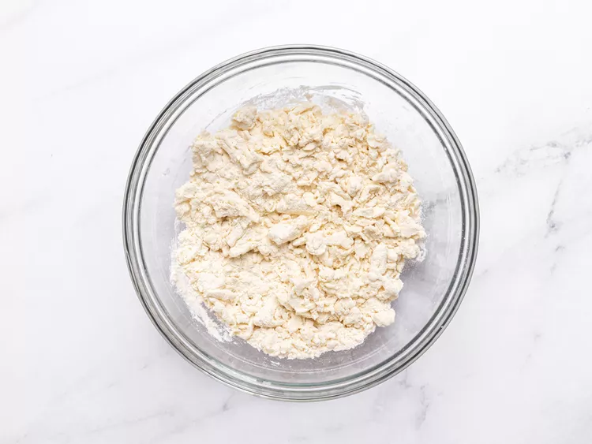
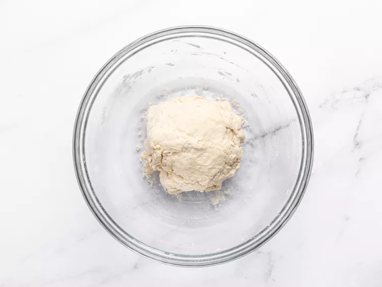
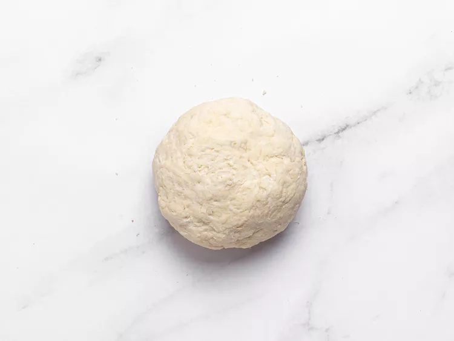
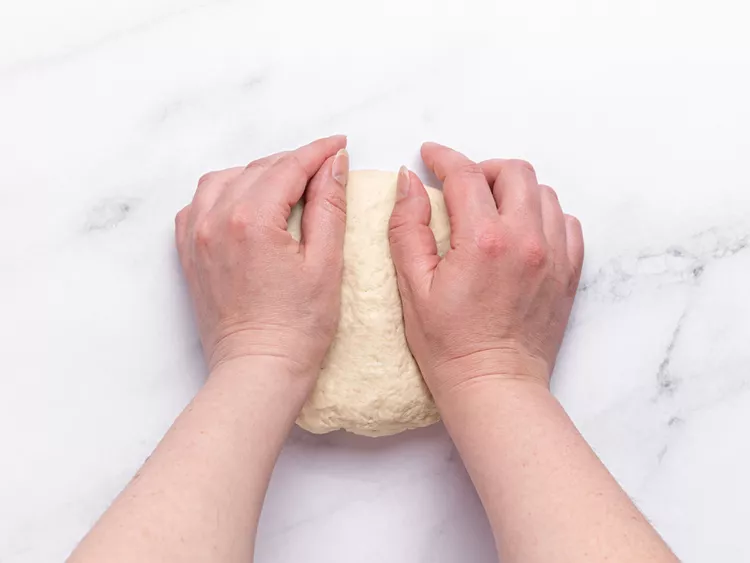
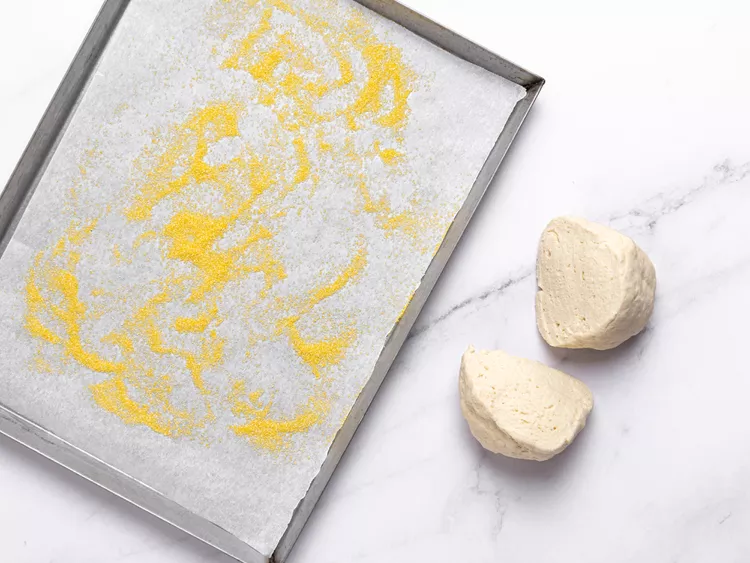
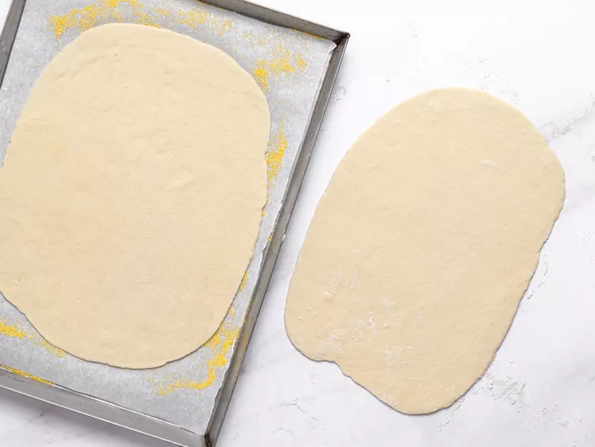
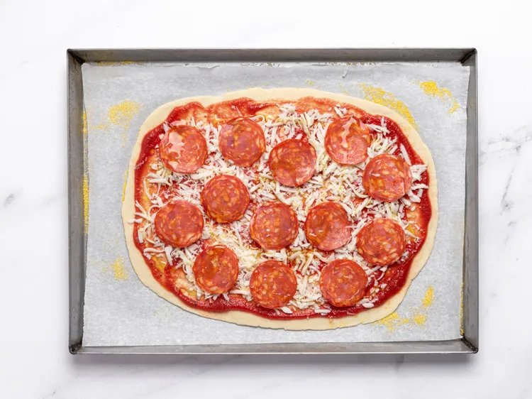
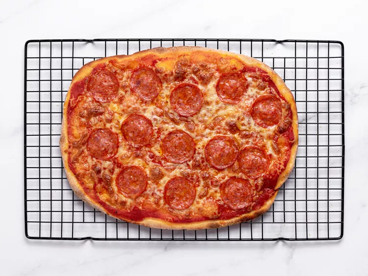
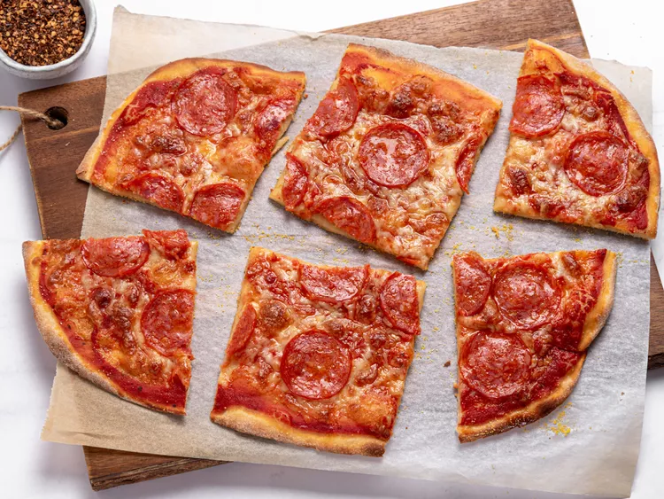

Odin Recipes
Flash Pizza

Ingredients
Dough
- 2 cups self-rising flour, or more as needed
- 1 ½ teaspoons white sugar
- 2 tablespoons finely grated Parmigiano-Reggiano cheese
- 1 tablespoon olive oil
- 1 cup plain Greek yogurt
- 1 teaspoon water, or as needed (Optional)
Toppings
- 2 tablespoons cornmeal, divided
- ⅔ cup pizza sauce, divided
- 8 ounces low-moisture mozzarella cheese, shredded
- ¼ cup finely grated Parmigiano-Reggiano cheese, divided
- 26 slices pepperoni, divided
- 2 teaspoons olive oil, divided
Directions
- Gather all ingredients. Preheat the oven to 500 degrees F (260 degrees C). Mix 2 cups self-rising flour, sugar, and Parmigiano-Reggiano cheese for dough in a bowl until well combined. Add olive oil and Greek yogurt and mix with a spoon until a shaggy dough forms.

- Clean off the spoon and mix the dough with your hands until it mostly comes together.

- Transfer dough to a work surface and continue pushing it together until it smooths out. It will be dry; don't be tempted yet to add more liquid.

- Knead dough until smooth and elastic, 3 to 4 minutes, only adding a teaspoon or two of water or flour if absolutely necessary.

- Cut dough into two equal pieces. Line a rimmed baking sheet with parchment paper and sprinkle 1 tablespoon cornmeal over the surface.

- Roll one piece dough on a lightly floured surface to an 1/8-inch-thick rectangle. Transfer to the prepared baking sheet.

- Top dough with ½ of the pizza sauce, spreading it almost, but not quite all the way, to the edges. Sprinkle ½ of the mozzarella over the sauce, then ½ of the Parmigiano-Reggiano over top. Arrange ½ of the pepperoni slices over the cheese, then drizzle 1 teaspoon oil over top.

- Bake in the center of the preheated oven until crust is beautifully browned and toppings are bubbly, about 15 minutes. Transfer to a wire rack and let sit for 5 minutes before slicing and serving.

- As soon as you remove the pizza from the oven, repeat Steps 7 to 9 to top and bake second pizza.

- Mmmmm... enjoy the yummy Flash Pizza!